7.3 修改曲面
曲面刚做出来时，往往大了一圈、短了一截，或者和别的曲面互相穿过去。这一页的工具就是用来“裁、补、缝”的：修剪、取消修剪、延伸、缝合、取消缝合、翻转法向、合并。
这些命令都在「曲面」选项卡 →「修改 ▾」里。可以把曲面想成一块布：修剪是“剪掉”，延伸是“接长”，缝合是“缝起来”。
修剪（Trim）#
这是什么：用一样东西当“剪刀”（另一张曲面、实体或草图线），把曲面剪开，再点掉不要的那块。
什么时候用：两张曲面互相穿过去了；要在曲面上开个洞；曲面比需要的大。
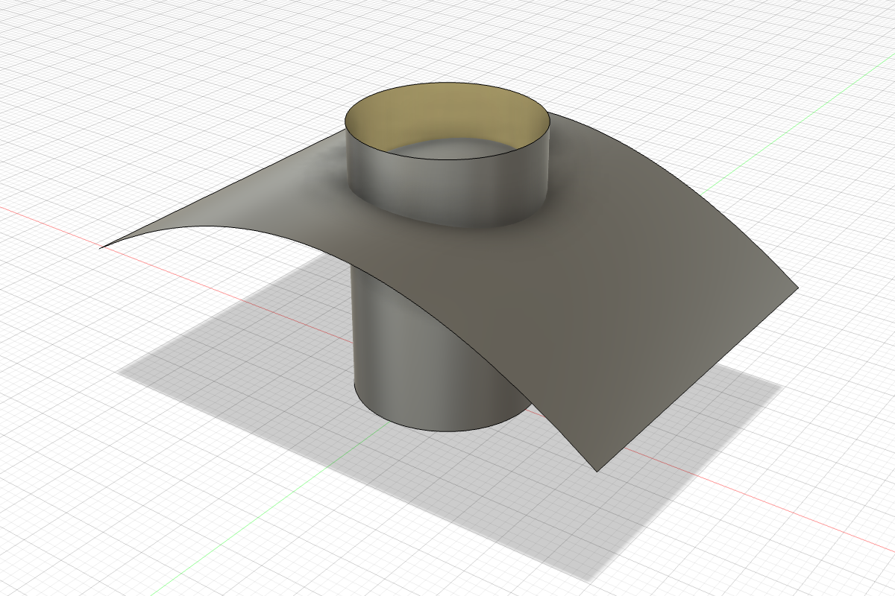
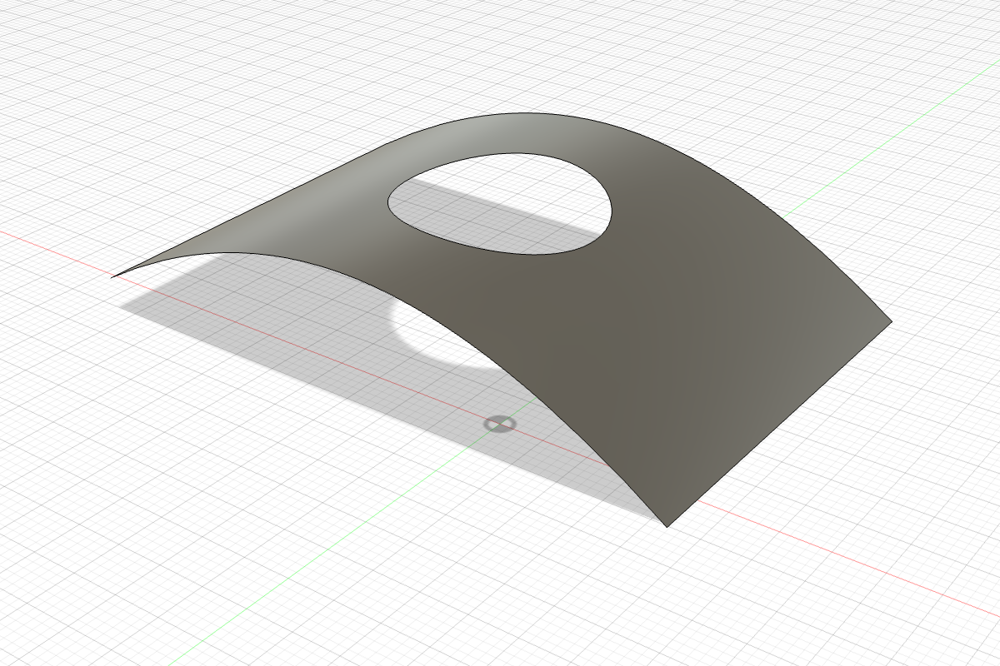
- 「曲面 → 修改 → 修剪」。
- 「修剪工具」点当剪刀的东西（这里是圆柱）。被剪开的各部分会分别高亮。
- 点要删掉的那一块（这里是拱面上被圆柱围住的圆片），点「确定」。
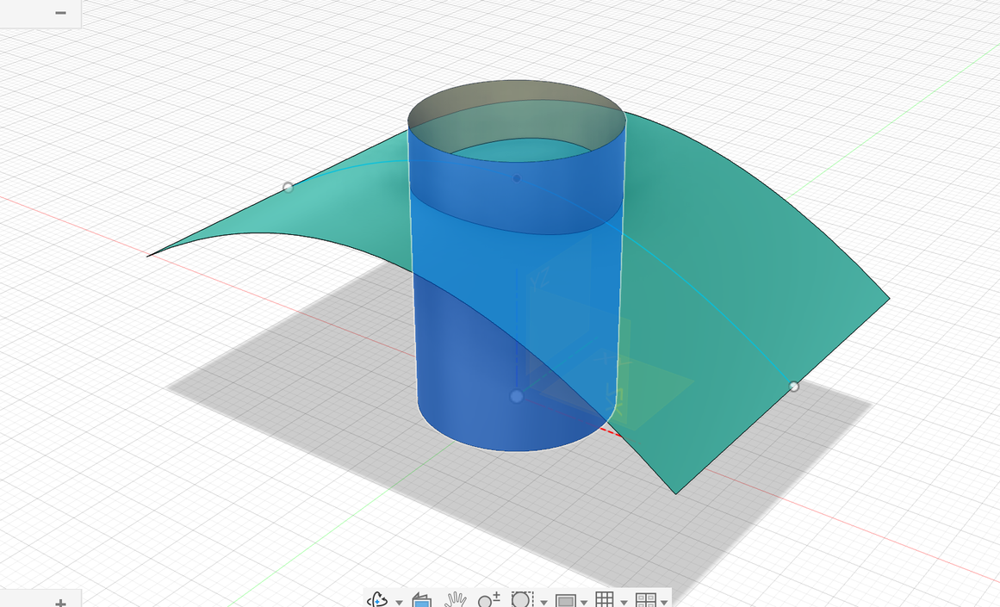
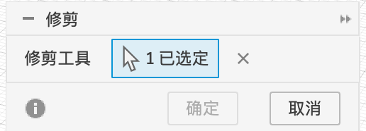
取消修剪（Untrim）#
这是什么：修剪的“后悔药”。把剪掉的洞、剪掉的边重新补回来，曲面恢复成剪之前的完整形状。
什么时候用：别人给的模型（比如 STEP）上有个洞要补；或者想在原始曲面上重新剪。自己做的模型直接在时间轴上删掉修剪特征更简单。
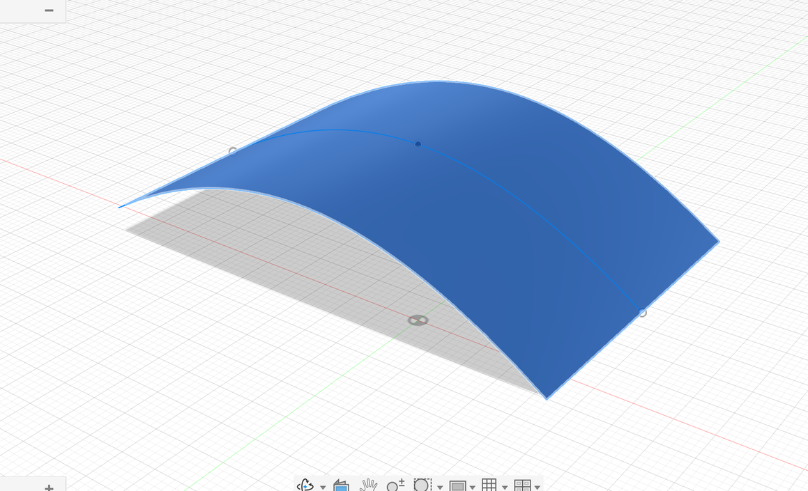
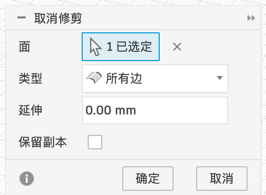
延伸（Extend）#
这是什么：把曲面的一条边往外“接长”一段。
什么时候用：曲面短了一截，和另一张曲面碰不上，没法修剪或缝合。通常先延伸得长一点，再修剪掉多出来的。
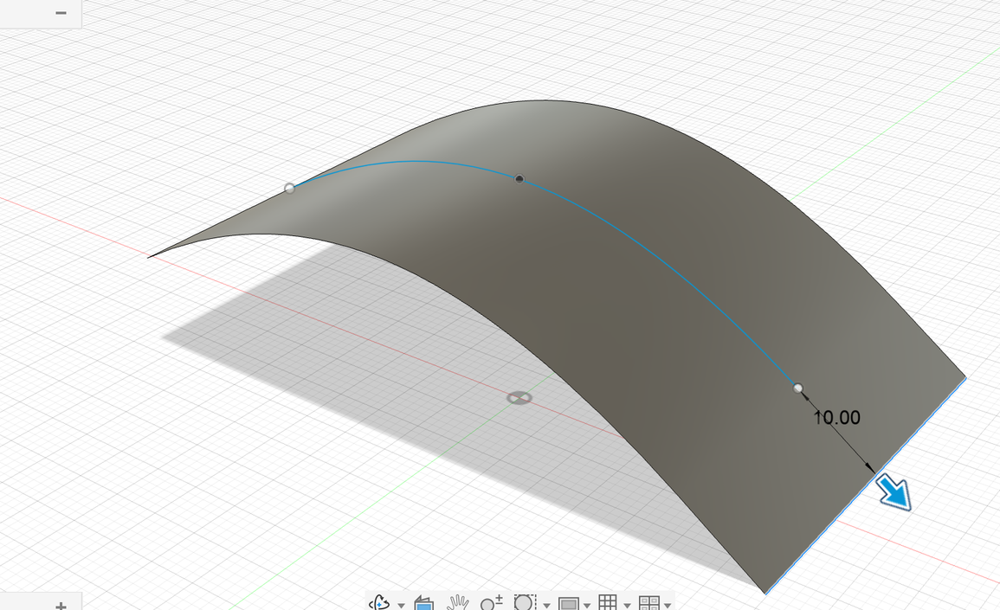
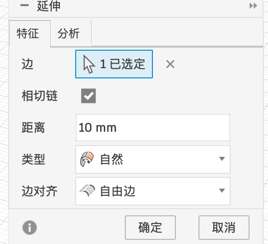
| 选项 | 含义 |
|---|---|
| 边 | 要接长的边 |
| 相切链 | 勾选后，和这条边光滑相连的边会一起选上 |
| 距离 | 接长多少 |
| 类型 | 自然：顺着曲面原来的弯曲趋势继续长；相切：从边开始沿切线直直地长出去；垂直：和原来的曲面垂直地长（下拉框里的选项以界面为准） |
| 边对齐 | 延伸出来那部分的侧边怎么走，默认「自由边」。一般保持默认 |
| 特征 / 分析 | 顶部两个页签，「分析」页可以检查延伸后的曲率 |
缝合（Stitch）与取消缝合#
这是什么：几张曲面的边贴在一起时，缝合把它们连成一个整体。如果这些面正好围成一个封闭的空间（像一个盒子），缝完就直接变成实心的实体，可以打印、可以加工。
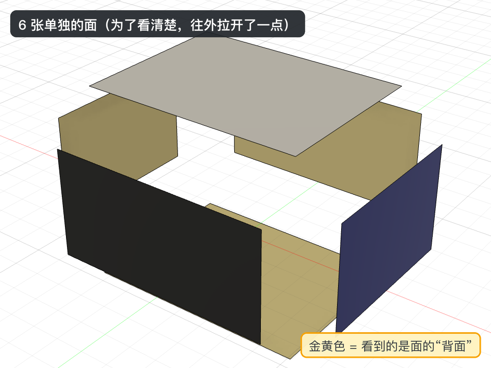
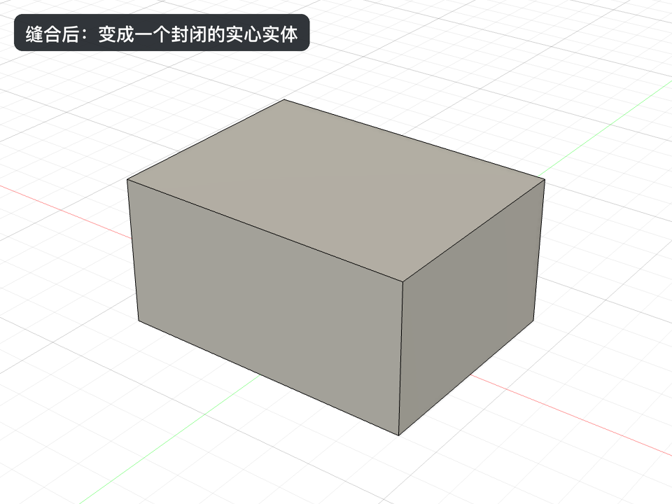
- 「曲面 → 修改 → 缝合」。
- 选所有要缝的曲面（框选最快）。
- 看对话框下面的「缝合结果」，点「确定」。
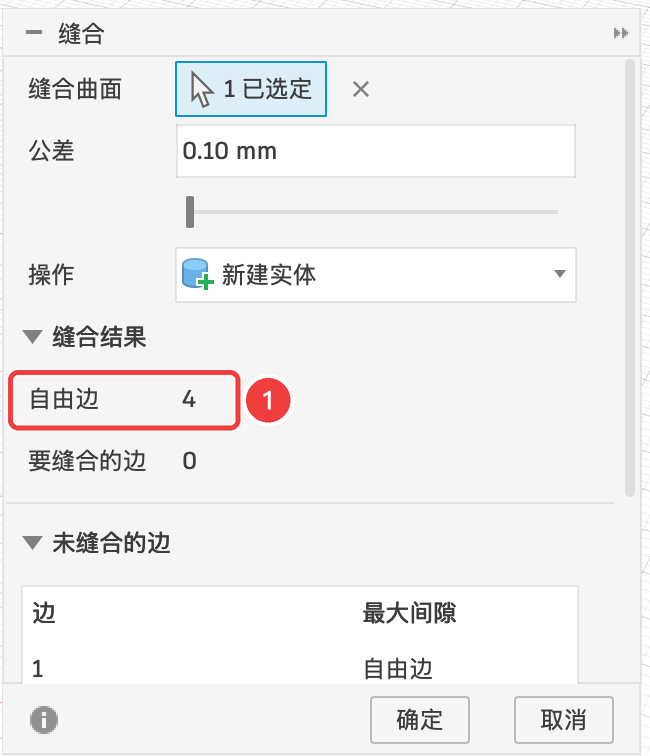
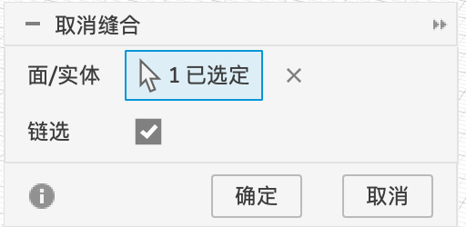
| 选项 | 含义 |
|---|---|
| 缝合曲面 | 要缝的面 |
| 公差 | 两条边之间的缝隙小于这个值就当作“贴上了”。默认 0.1 mm |
| 操作 | 结果是新建实体，还是并到已有的实体里 |
| 缝合结果 → 自由边 | 没和任何别的面贴上的边的数量。想缝成实体，这个数必须是 0 |
| 未缝合的边 | 列出每条自由边和它离最近的边有多远（最大间隙） |
取消缝合反过来，把一个实体或者缝好的曲面拆回一张张独立的面。常用来修改别人给的模型：拆开、改其中一张面、再缝回去。
翻转法向（Reverse Normal）#
先了解“法向”：曲面虽然很薄，但也分正面和背面，就像一张纸。垂直于曲面、指向正面的方向叫法向。Fusion 用颜色区分：看到正面是正常的灰色，看到背面是金黄色。
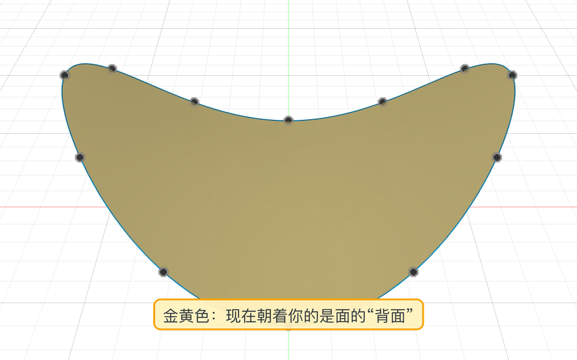
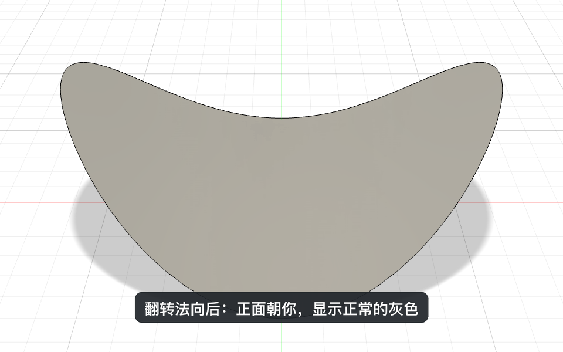
什么时候用：法向会影响「加厚」往哪边长、渲染时的外观。看到一片金黄色、或者加厚长错了方向时，翻一下就行。缝合成封闭的实体以后，面就分得清里外了，一般不用再管法向。
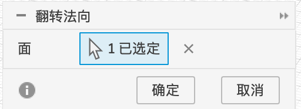
合并（Merge）#
这是什么：把相邻的两张面合成一张。什么时候用：一个本来应该是一整张的面被分成了好几块（常见于导入的模型），合并后选面、加圆角更方便。
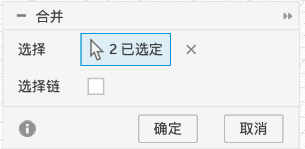
- 我会用修剪在曲面上开洞、删掉多余的部分
- 我知道“自由边”是没贴上别的面的边，缝成实体时要为 0
- 我知道金黄色表示看到的是曲面的背面，可以用翻转法向改过来